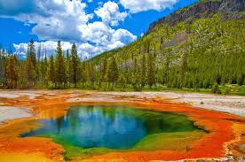
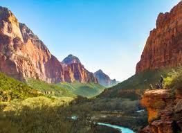
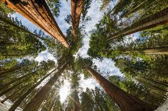

The National Park Service was created by an act signed by President Woodrow Wilson on August 25, 1916. Yellowstone National Park was established by an act signed by President Ulysses S. Grant on March 1, 1872, as the nation's first national park.
What is the largest national park site?
Wrangell-St. Elias National Park and Preserve, AK, at 13.2 million acres
What is the smallest national park site?
Thaddeus Kosciuszko National Memorial, PA, at 0.02 acres
What is the most visited national park?
Great Smoky Mountains National Park
Where can I find a park map?
Specific park websites
Can I bring my pet to a national park?
Some national parks welcome pets in developed areas, on many trails and campgrounds, and in some lodging facilities.
What is the National Park service budget?
FY 2017 Enacted: $2.932 billion
How many employees are in the National Park Service?
Permanent, temporary, and seasonal employees: More than 20,000
Who is the director of the National Park Service?
Dan Smith is the deputy director exercising the authority of director for the National Park Service.
What do I need to know about driving off road in national parks?
Before you head out, check with the national parks that you intend to visit. In many national parks, off-road driving is illegal.
Yellowstone National Park 
Yellowstone is home to more than half the world's geysers.
Yellowstone is larger than Rhode Island and Delaware COMBINED.
There are more than 10,000 hydrothermal features in Yellowstone.
Yellowstone is home to the largest concentration of mammals in the lower 48 states (67 species).
Zion National Park 
Zion has one of the largest freestanding arches in the world.
Zion is more than just slot canyons and amazing hikes -- it also protects archeological sites.
Zion is home to one of the greatest engineering feats of modern times.
Before it was a national park, Zion was a national monument, and its name was not Zion.
Sequoia National Park 
Sequoia was the first park created to protect a living organism.
Sequoia is home to the tallest mountain in the lower 48.
Sequoias are some of the largest and oldest trees in the world.
Fire and proactive forest management play a unique role in the park.